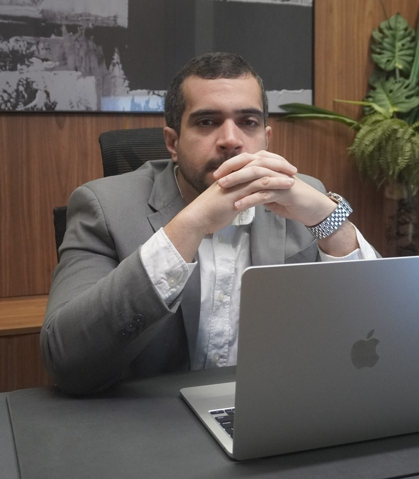

Advocacia previdenciária · Carpina/PE · Atende todo o Brasil
Sou Eduardo Rodrigues, advogado, e atuo com Direito Previdenciário há 13 anos. Ajudo trabalhadores negados pelo INSS e mães de crianças autistas a conquistar o benefício que já é seu — sem juridiquês, e falando direto comigo.
Atuação
Você está doente, sem conseguir trabalhar, e o INSS negou, cortou ou não prorrogou o seu auxílio.
Um salário mínimo para o idoso ou a pessoa com deficiência de baixa renda — inclusive a criança autista.
Por idade, tempo de contribuição, rural, invalidez ou da pessoa com deficiência. Cada caso tem um caminho.
Ficou com uma sequela permanente depois de um acidente? Isso pode virar um benefício mensal pra vida toda.
Benefício com valor errado, ou parcelas que o INSS deixou de te pagar lá atrás. Dá pra corrigir.
Causa autista · Onde mais me procuram
Sei o peso de cada laudo, cada negativa e cada fila quando o assunto é o seu filho. Cuido de toda a parte jurídica do BPC/LOAS para crianças e adultos autistas — do pedido no INSS à ação na Justiça — e explico cada passo em português, no seu tempo. É a área em que mais me dedico hoje.

O advogado
Atuo com Direito Previdenciário há 13 anos e, nesse tempo, já acompanhei mais de dois mil processos de gente que o INSS tinha tratado como caso perdido. Escolhi essa área por um motivo simples: é onde o Direito muda de verdade a vida de quem quase não tem a quem recorrer.
Com o tempo, a causa das crianças autistas virou o centro do meu trabalho — e é por isso que tanta mãe me encontra. Aqui, quem vai te responder sou eu.
Como eu trabalho
Nada de robô nem de atendente de plantão. Quem lê o seu caso e responde é o Eduardo.
Olho seus documentos e falo com honestidade se dá pra entrar e qual o caminho — mesmo quando a resposta é não.
Do pedido no INSS à Justiça, quando precisa, você fica sabendo de cada etapa.
Quem já passou por isso
“Agradeço ao Dr. Eduardo por todo o empenho, o carinho e o profissionalismo na causa do meu filho, Samuel. Nos acolheu com respeito e cuidado — um profissional competente, humano e de total confiança. Recomendo de olhos fechados.”
No começo fiquei receosa por morar longe e o escritório ser de Carpina. Mas o Dr. Eduardo e a equipe estiveram sempre prontos, no WhatsApp e na ligação, tirando todas as dúvidas.
Um profissional de competência e serenidade. Atencioso e tranquilo para tirar todas as dúvidas, de grande responsabilidade e dedicação com os clientes.
Antes foram muitas lutas e muito “não”. No tempo certo, a pessoa certa aparece. Ao Dr. Eduardo e à equipe, muito obrigada pelo trabalho.
Fale comigo
Me conta com calma o que aconteceu com o seu benefício. Eu leio, penso no seu caso e te respondo com sinceridade — inclusive quando a resposta é que ainda não é hora de entrar com nada. Quem vai te atender sou eu, e não tem pressa.